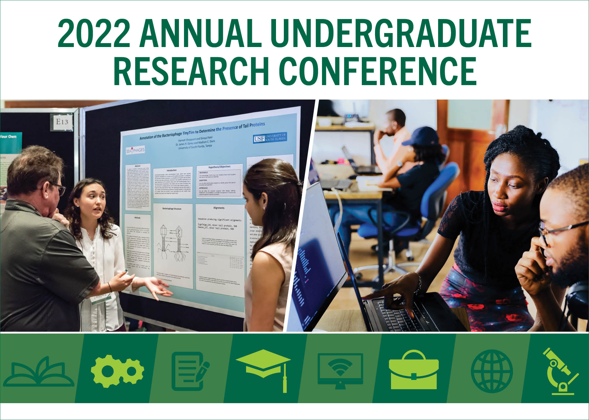
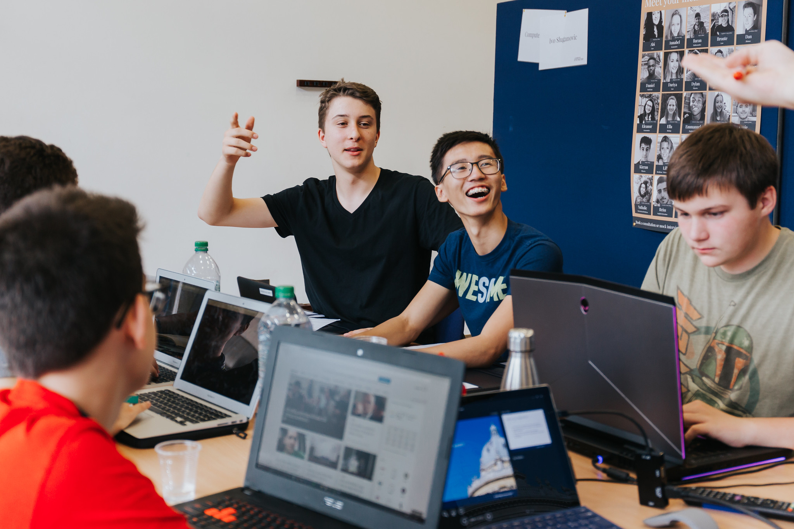
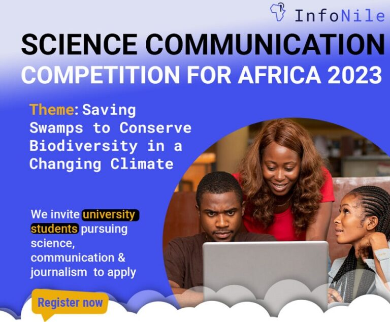
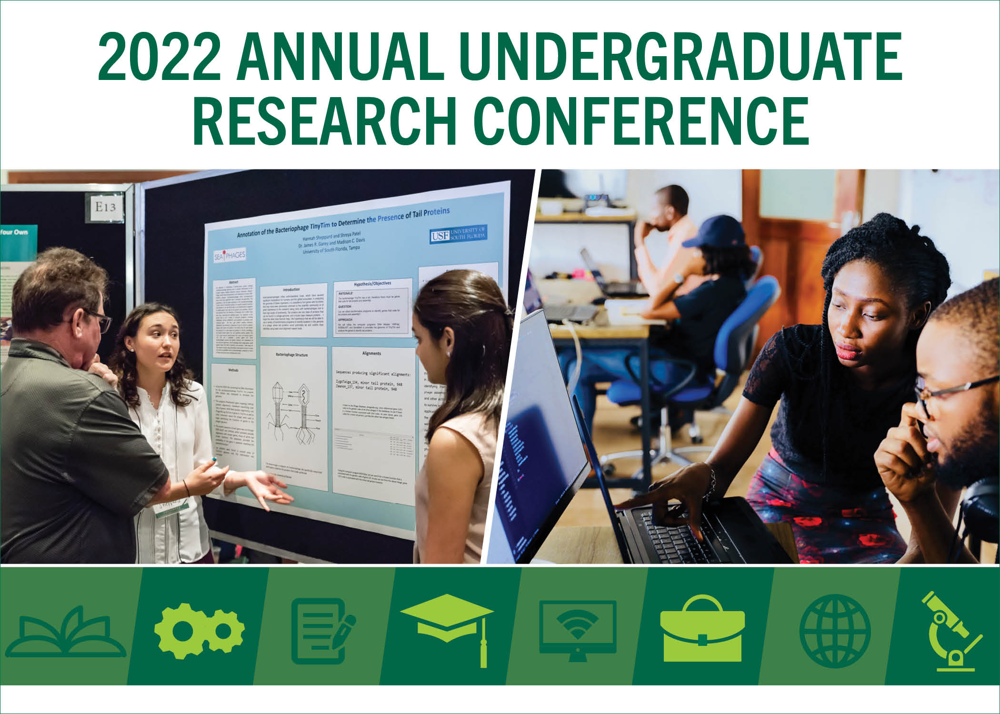
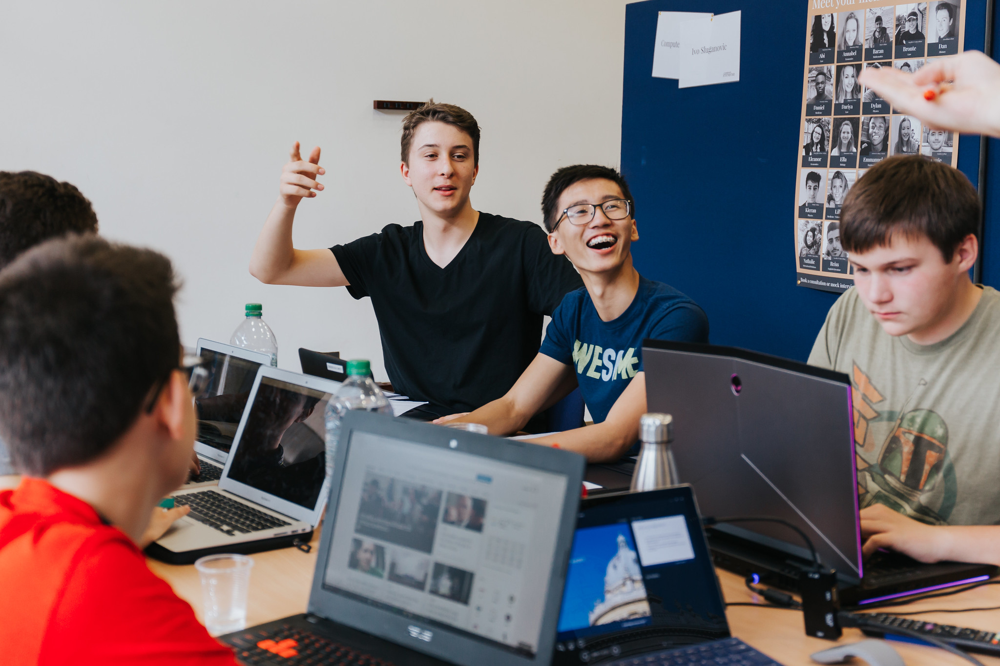
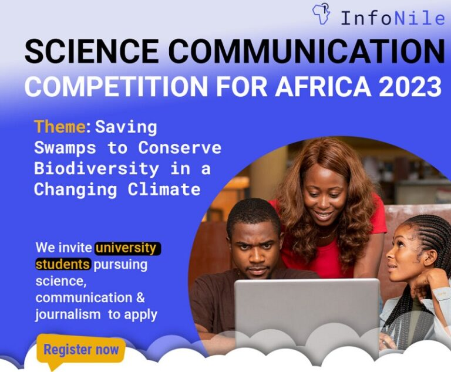

Events
UPCOMING EVENTS
These are some of the events the department has been planning to undertake.
Annual Computer Science Conference
Guest Speaker Series
Hackathons and Coding Competitions
These are some of the events the department has been planning to undertake.
Annual Computer Science Conference
Guest Speaker Series
Hackathons and Coding Competitions
Relive the highlights of our past events through our comprehensive archives. Explore event summaries, view photos, and immerse yourself in the valuable insights shared by guest speakers and experts.
Past Events - Visit our archives to see summaries and photos from past events.